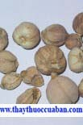

Tên khác:
Tên khác: Vị thuốc Bạch đậu khấu còn gọi là Bà khấu, Bạch khấu nhân, Bạch khấu xác, Đa khấu, Đới xác khấu (TQDHĐT.Điển), Đậu khấu, Đông ba khấu, Khấu nhân, Tử đậu khấu (Đông dược học thiết yếu), Xác khấu (Bản thảo cương mục).
Tên khoa học: Amomum Repens Sonner.
Họ khoa học: Họ Zingiberaceae.
Tiếng Trung: 白豆蔻
Cây bạch đậu khấu
(Mô tả, hình ảnh cây bạch đấu khấu, thu hái, chế biến, thành phần hoá học, tác dụng dược lý ....)
Mô tả
 Cây
thảo cao khoảng 2-3m. Thân rễ nằm ngang to bằng ngón tay, lá
hình dải, mũi mác, nhọn 2 đầu, dài tới 55cm, rộng 6cm mặt trên
nhẵn, dưới có vài lông rải rác bẹ lá nhẵn, có khía, lưỡi bẹ rất
ngắn. Cụm hoa mọc ở gốc của thân mang lá, mọc bò, dài khoảng
40cm, mảnh, nhẵn, bao bởi nhiều vảy chuyển dần thành lá bắc ở
phía trên, lá bắc mau rụng. Cuống chung của cụm hoa ngắn, mang
3-5 hoa, ở nách những lá bắc nhỏ hình trái soan. Hoa màu trắng
tím, có cuống ngắn, đài hình ống nhẵn, có 3 răng ngắn. Tràng
hình ống nhẵn, dài hơn đài 2 lần, thùy hình trái xoan tù, thùy
giữa hơi dài rộng hơn, lõm hơn. Cánh môi hình thoi. Quả nang
hình trứng, bao bởi đài tồn tại, có khi lớn đến 4cm.
Cây
thảo cao khoảng 2-3m. Thân rễ nằm ngang to bằng ngón tay, lá
hình dải, mũi mác, nhọn 2 đầu, dài tới 55cm, rộng 6cm mặt trên
nhẵn, dưới có vài lông rải rác bẹ lá nhẵn, có khía, lưỡi bẹ rất
ngắn. Cụm hoa mọc ở gốc của thân mang lá, mọc bò, dài khoảng
40cm, mảnh, nhẵn, bao bởi nhiều vảy chuyển dần thành lá bắc ở
phía trên, lá bắc mau rụng. Cuống chung của cụm hoa ngắn, mang
3-5 hoa, ở nách những lá bắc nhỏ hình trái soan. Hoa màu trắng
tím, có cuống ngắn, đài hình ống nhẵn, có 3 răng ngắn. Tràng
hình ống nhẵn, dài hơn đài 2 lần, thùy hình trái xoan tù, thùy
giữa hơi dài rộng hơn, lõm hơn. Cánh môi hình thoi. Quả nang
hình trứng, bao bởi đài tồn tại, có khi lớn đến 4cm.
Phân biệt:
Ngoài cây trên người ta còn dùng các cây với những tên Bạch đậu khấu.
(1) Cây Amomum krervanh Pierre.
(2) Cây Amomum cardamomum Lin.
(3) Cây Elettaria cardamomum Maton gọi là Tiễn đậu khấu.
(4) Cây Alpinia sp. gọi là Thổ hương khấu. Mọc hoang ở tỉnh Quảng Tây (Trung Quốc).
Địa lý:
Cây mọc hoang dại ở vùng thượng du bắc bộ (Cao Bằng, Lào Cai) Việt Nam và Cam pu chia. Cây này Việt Nam còn phải nhập.
Thu hái, sơ chế:
Thu hái vào mùa thu, hái cây trên 3 năm, hái quả còn giai đoạn xanh chuyển sang vàng xanh. Hái về phơi trong râm cho khô, có khi phơi khô xong bỏ cuống rồi xông diêm sinh cho vỏ trắng cất dùng, khi dùng bóc vỏ lấy hạt.
Mô tả dược liệu:

1) Bạch đậu khấu, quả nang khô, hình cầu hoặc hình cầu dẹt, không đều, đường kính khoảng 4-5 phân, vỏ quả màu vàng trắng, rãnh trơn có 3 rãnh dọc sâu, rõ ràng và nhiều vân rãnh cạn, một đầu có vết quả lồi lên hình tròn. Vỏ quả chất dòn thường nứt ra, lộ ra bên trong có hạt màu nâu tụ thành hình khối, trong có 3 buồng mỗi buồng 9-12 hạt, hạt hình đa giác màu xám trắng. Vỏ quả bóc ra gọi là Đậu khấu xác (Vỏ đậu khấu), mùi thơm rất nhẹ.
2) Hoa bạch đậu khấu màu nâu đến nhạt, thể hiện hình khối dài ép dẹt, mặt ngoài bao phủ hoa bị chất màng, có gân dọc rõ ràng, đầu dưới giữ cuống hoa tàn, thương phẩm thường lá phiến vụn, chất màng và vật dạng sơ, xen kẽ số ít cuống hoa, hơi có mùi thơm.
Phần dùng làm thuốc:
Hạt quả và hoa.
Vị thuốc bạch đậu khấu
(Công dụng, Tính vị, quy kinh, liều dùng .... )
Tính vị qui kinh
Vị cay, the, mùi thơm, tính nóng, vào kinh Phế, Tỳ, Vị (Trung Quốc Dược Học Đại Từ Điển).
Vị cay, tính ấm, vào kinh Phế, Tỳ, Vị (Đông dược học thiết yếu).
Công dụng - Chủ trị:

Hành khí, hóa thấp, chỉ ẩu. Trị nôn mửa, dạ dầy đau, đầy hơi, Tỳ Vị có thấp trệ (TQDHĐT.Điển).
Hành khí, làm ấm Vị. Trị phản vị, phiên vị, vị qủan trướng đau, bụng đầy, ợ hơi do hàn tà ngưng tụ và khí trệ gây ra (Đông Dược Học Thiết Yếu).
Liều dùng:
2 - 6g.
Cách dùng:

Bạch đậu khấu trái tròn mà lớn như hạt Bạch khiên ngưu, xác trắng đầy, hạt như hạt súc Sa nhân, khi bỏ vỏ vào thuốc thì bỏ vỏ sao dùng (Bản Thảo Cương Mục).
Ứng dụng lâm sàng của vị thuốc bạch đậu khấu
Trị đột ngột muốn nôn, ngột ngạt khó chịu ở tim:
Nhai vài hạt Bạch đậu khấu (Trửu Hậu Phương).
Trị trẻ nhỏ ọc sữa do vị hàn:

Bạch đậu khấu, Súc sa nhân, Mật ong, mỗi thứ 15 hạt, sinh Cam thảo, chích Cam thảo mỗi thứ 8g, tán bột, xát vào miệng trẻ con (Thế Y Đắc Hiệu Phương).
Trị Vị hàn ăn vào mửa ra:
Bạch đậu khấu 3 trái, tán bột, uống với một chén rượu nóng liên tiếp vài ngày (Trương Văn Trọng Bị Cấp Phương).
Trị Tỳ hư ăn vào mửa ra:
Bạch đậu khấu, Súc sa nhân mỗi thứ 80g, Đinh hương 40g, Trần thương mễ 1 chén, sao đen với Hoàng thổ, xong bỏ đất, lấy thuốc, tán bột, trộn nước gừng làm viên. Mỗilần uống 8~12g với nước gừng (Tế Sinh Phương).
Trị sản hậu nấc cụt:
Bạch đậu khấu, Đinh hương mỗi thứ 20g, tán bột, uống với nước sắc Đào nhân (Càn Khôn Sinh Ý).
Trị Vị hư hàn sinh ra nôn mửa, ăn vào mửa ra:
Bạch đậu khấu, Nhân sâm, Gừng sống, Quất bì, Hoắc hương (Trung Quốc Dược Học Đại Từ Điển).
Trị hàn đàm đình trệ lại ở vị làm nôn mửa như bị phản vị:
Bạch đậu khấu, Bán hạ, Quất hồng, Gừng sống, Bạch truật, Phục linh (Trung Quốc Dược Học Đại Từ Điển).
Trị Tỳ hư quá đến nỗi mắt trắng, mộng thịt che mắt:
Bạch đậu khấu, Quất bì, Bạch truật, Bạch tật lê, Quyết minh tử, Cam cúc hoa, Mật mông hoa, Mộc tặc thảo, Cốc tinh thảo (Trung Quốc Dược Học Đại Từ Điển).
Lý khí ở phần thượng tiêu để khỏi trệ khí:
Bạch đậu khấu, Hoắc hương, Quất bì, Mộc hương, thêm Ô dước, Hương phụ, Tử tô, trị các chứng nghịch khí của phụ nữ (Trung Quốc Dược Học Đại Từ Điển).
Trị Vị hư hàn ăn vào mửa ra thường sảy ra lúc mùa thu:
Bạch đậu khấu làm quân, Sâm, Truật, Khương, Quất làm tá (Trung Quốc Dược Học Đại Từ Điển).
Giải độc rượu, muốn nôn vì uống quá nhiều rượu:
Bạch đậu khấu, Biển đậu, Ngũ vị tử, Quất hồng, Mộc qua (Trung Quốc Dược Học Đại Từ Điển).
Trị ngực bụng đau do khí trệ:
Bạch đậu khấu 6g, Hậu phác 8g, Quảng mộc hương 4g, Cam thảo 4g, sắc uống (Ngũ Cách Khoan Trung Ẩm - Lâm Sàng Thường Dụng Trung Dược Thủ Sách).
Trị ngực đầy tức do thấp trọc uất ở thượng tiêu, khí cơ trở trệ:
Bạch khấu nhân 6g, Hạnh nhân 12g, Ý dĩ nhân 20g, Hậu phát 8g, Hoạt thạch 16g, Trúc diệp 12g, Bán hạ 12g, Thông thảo 8g, sắc uống (Tam Nhân Thang - Lâm Sàng Thường Dụng Trung Dược Thủ Sách).
Tham khảo
So sánh bạch đậu khấu với các vị thuốc khác
+”Tính vị và công năng của Bạch đậu khấu và Súc sa nhân cùng như nhau nhưng Bạch đậu khấu có mùi thơm mát, nhẹ, từ từ thấm vào Tâm, Tỳ, thiên về đi lên trước rồi mới đi xuống sau. Súc sa nhân lại khác hẳn: giỏi về đi xuống nhưng lại hơi ấm và đi lên. Thăng giáng của 2 vị này đều có cái hay của nó - Bạch đậu khấu vị cay, thơm, tính ấm, mầu trắng, đi vào Phế, sở trường về điều trị hàn tà ở thượng tiêu. Bạch khấu xác được cái dư khí của nhân Đạu khấu, tính tương đối hòa hoãn. Nếu Phế, Vị có vẻ hơi đầy, dùng vào thấy thông vùng ngực, lý khí, hòa Vị” (Đông Dược Học Thiết Yếu).
. Cây Bạch đậu khấu còn cho xác và hoa, gọi là Đậu khấu xác, Đậu khấu hoa, có tác dụng như Bạch đậu khấu nhưng kém hơn (Thường Dụng Trung Dược).
. Đậu khấu và Sa nhân tính vị và công dụng giống nhau, đều là thuốc ôn vị tán hàn, lý khí hóa thấp. Nhưng Khấu nhân chuyên về ôn vị chỉ ẩu còn Sa nhân thì chuyên về ôn Tỳ chỉ tả (Thường Dụng Trung Dược).
. Bạch đậu khấucòn dùng để giải độc rượu, say rượu không tỉnh có thể dùng nó (Lâm Sàng Thường Dụng Trung Dược Thủ Sách).
Sa nhân, Khấu nhân tính ôn, vị cay, đề có thể ôn Tỳ, tán hàn, lý khí, hoá thấp, đều là thuốc chủ yếuđể lý khí, khoan hung, đều có thể trị bụng đầy trướng, bụng đau, nôn mửa nhưng Sa nhân tuy có vị thơm nhưng khí lại trọc, sức tán hàn khá mạnh, chuyên về hạ tiêu và trung tiêu, thích hợp với hàn thấp tích trệ, hàn tả, lãnh lỵ, lại có tác dụng an thai. Bạch khấu có vị thơmmà khí thanh, tính ôn táo yếu hơn, chuyên về thượng tiêu và trung tiêu, thích hợp với các chứng nấc, nôn do thấp trọc ngăn trở ở Vị, lại có thể tuyên thông Phế khí, trị ngực đầy do thấp ngăn trở khí. Chứng thấp trệ thiên về nhiệt, thường dùng Bạch khấu, không dùng Sa nhân. Bạch khấu và Sa nhân khi sắc thuốc, nên cho vào sau để tránh bay mất khí (Thực Dụng Trung Y Học).
Kiêng kỵ khi dùng bạch đậu khấu
Nôn mửa, bụng đau do nhiệt, hỏa uất: không dùng (Trung Quốc Dược Học Đại Từ Điển).
Phế, Vị có hỏa uất, chứng nhiệt: không dùng (Đông Dược Học Thiết Yếu).
Nơi mua bán vị thuốc BẠCH ĐẬU KHẤU đạt chất lượng ở đâu?
Trước thực trạng thuốc đông dược kém chất lượng, nguồn gốc không rõ ràng,... xuất hiện tràn lan trên thị trường, làm ảnh hưởng tới hiệu quả điều trị cũng như ảnh hưởng tới sức khỏe của bệnh nhân. Việc lựa chọn những địa chỉ uy tín để mua thuốc đông dược là rất quan trọng và cần thiết. Vậy khách hàng có thể mua vị thuốc BẠCH ĐẬU KHẤU ở đâu?
BẠCH ĐẬU KHẤU là vị thuốc nam quý, được sử dụng rộng rãi trong YHCT. Hiện tại hầu hết các cửa hàng thuốc đông dược, phòng khám đông y, phòng chẩn trị YHCT... đều có bán vị thuốc này. Tuy nhiên người mua nên chọn những địa chỉ có uy tín, đảm bảo chất lượng, có giấy phép hoạt động để mua được vị thuốc đạt chất lượng.
Với mong muốn bệnh nhân được sử dụng những loại dược liệu đúng, chất lượng tốt, phòng khám Đông y Nguyễn Hữu Toàn không chỉ là đia chỉ khám chữa bệnh tin cậy, uy tín chất lượng mà còn cung cấp cho khách hàng những vị thuốc đông y (thuốc nam, thuốc bắc) đúng, chuẩn, đạt chuẩn chất lượng. Các vị thuốc có trong tiêu chuẩn Dược điển Việt Nam đều được nghành y tế kiểm nghiệm đạt chất lượng tiêu chuẩn.
Vị thuốc BẠCH ĐẬU KHẤU được bán tại Phòng khám là thuốc đã được bào chế theo Tiêu chuẩn NHT.
Giá bán vị thuốc BẠCH ĐẬU KHẤU tại Phòng khám Đông y Nguyễn Hữu Toàn: Gọi 18006834 để biết chi tiết
Tùy theo thời điểm giá bán có thể thay đổi.
+ Khách hàng có thể mua trực tiếp tại địa chỉ phòng khám: Cơ sở 1: Số 481 lô 22 Lê Hồng Phong, Phường Gia Viên, Thành phố Hải Phòng
Tag: cay bach dau khau, vi thuoc bach dau khau, cong dung bach dau khau, Hinh anh cay bach dau khau, Tac dung bach dau khau, Thuoc nam
Thaythuoccuaban.com Tổng hợp
*************************